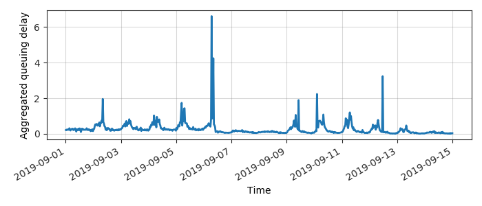
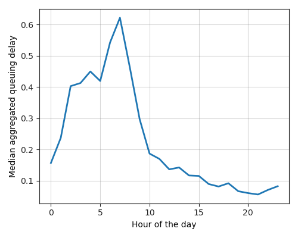

---
layout: default
title: Last-mile delay survey / 2019-09-01 / AS23951
---
AS23951, CITRA-AS-ID PT JEMBATAN CITRA NUSANTARA, ID
Summary
- Daily last-mile fluctuations: low
- Number of probes: 3
- APNIC eyeball rank: 4938
- Daily fluctuations: True
- Main frequency: 0.0417
- Average peak-to-peak amplitude: 0.57ms
Aggregated last-mile queuing delay

Periodogram

24H profile

Probes' last-mile RTT